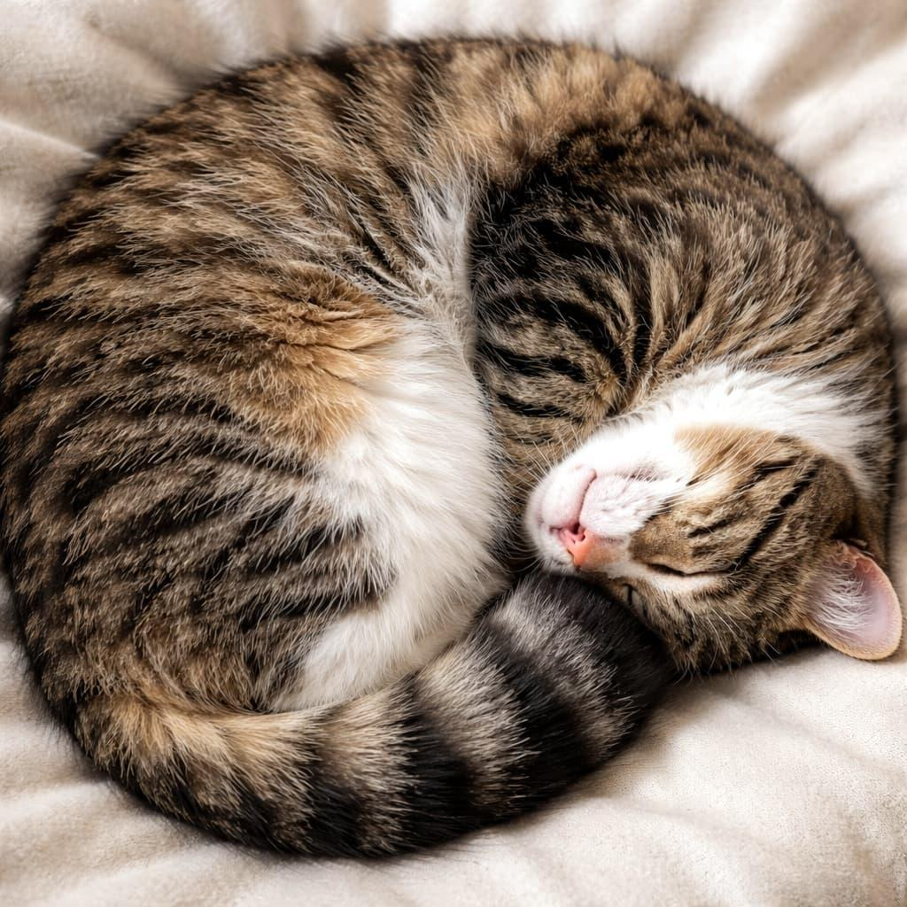
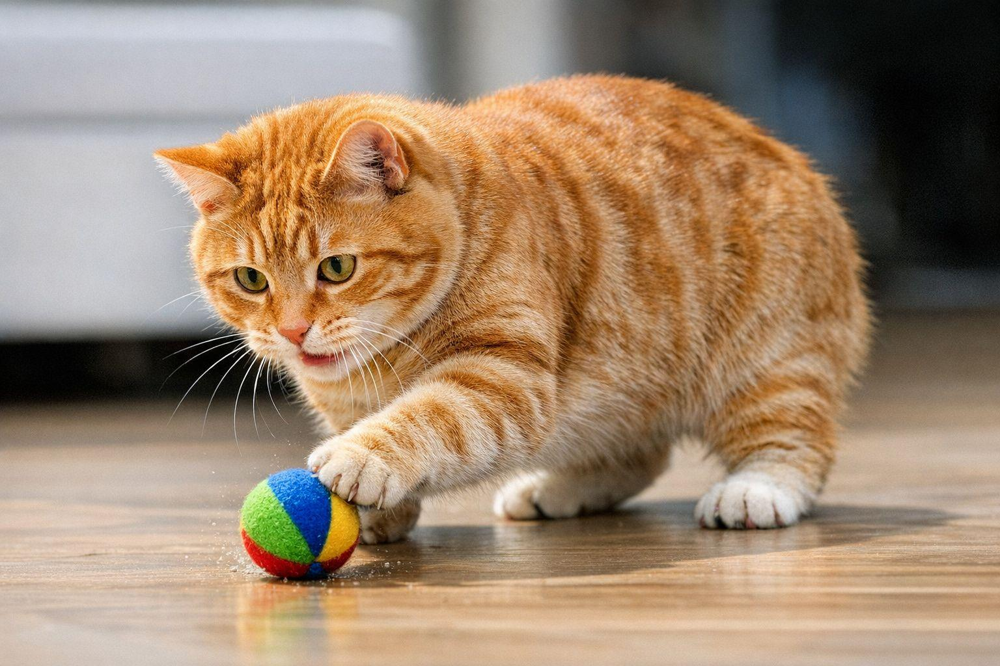
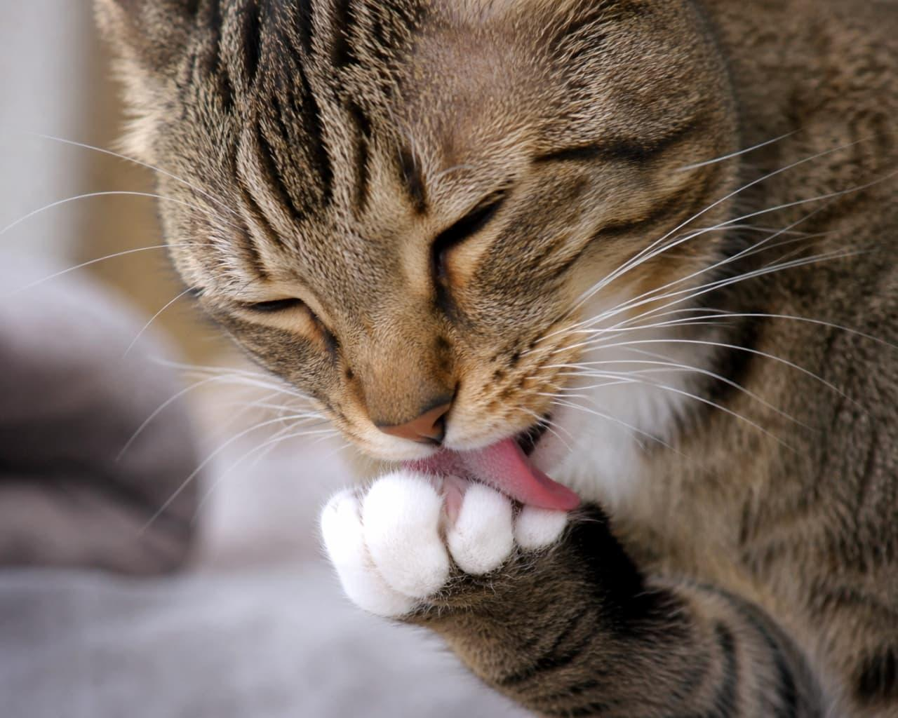

Kediler kendilerini farklı davranışlarla ifade ederler. Mırlamaları rahat olduklarını gösterebilir; ancak bazen stres veya rahatsızlık durumlarında da mırlayabilirler. Kuyruk hareketleri, kulaklarının konumu ve çıkardıkları sesler ruh hâlleri hakkında ipuçları verir. Oyun oynamak ve çevrelerini keşfetmek de kedilerin günlük yaşamlarının önemli parçalarıdır.